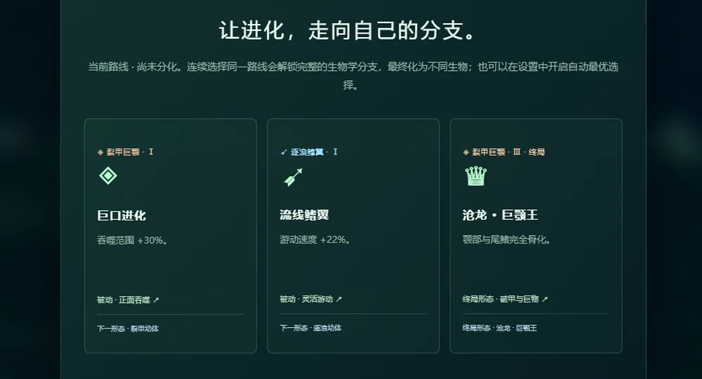

01
深海长歌
可存盘的长期生存。积累生物质与生命等级，离线也会继续生长，把一条鱼养成跨越数月的旅程。
可存盘永久成长慢慢变强
想慢慢养一部生命史，或来一场四分钟的潮汐乱斗，都可以。
可存盘的长期生存。积累生物质与生命等级，离线也会继续生长，把一条鱼养成跨越数月的旅程。
四分钟高强度敌潮。六波主动扑来的生物、三选一强化与连击评分，随时开一局都足够尽兴。
踩拍吞噬获得共鸣；成长、受击、Boss 与区域切换自然切换不同配乐。本质是一款会呼吸的音乐游戏。
升级不再只是数字。连续选择同一路线，就能一步步走向完全不同的终局生物与形态。

EVOLUTION / 新的生命可能戴上耳机，点击开始。你的生命交响曲，从第一口微光开始。